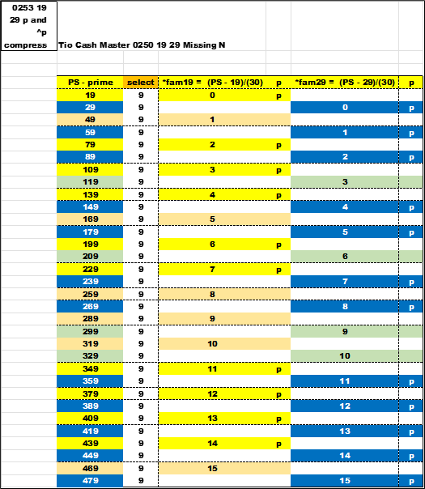

Several things need to be recapped at this point.
Using the MOD() function to easily show factors.
The focus of looking for primes is a general formula of : PS = *fam + n(30) where n = PSL.
Or PSL = (PS - *fam)/30.
The *wildcard and *fam formulas show a path to look for prime numbers.
With the data filtered and sorted , there is a clear view of the distance between primes and non-primes.
The magic number is a distance of thirty between any PS within a *fam. This will be very important later.
The slope of a line for a *fam is thirty , so all prime (p) and non-prime (^p) lay on the same line for given *fam.
In the end the cosmos version of the data reveals several unique pieces of information. Here *fam07 is used as an example.
a) The factors are sub-grouped together by *fam.
b) The PSL grows by the value of the *fam07.
c) The factors second digit grows by 30.
The PS grows by *fam07 times 30 = 210. The diff is always *fam times 30 per subgroup.
The column labeled ‘factors’ is a textual representation the two factors ; the sort is *fam first , then by the PSL. It brings into sort order the text of the ‘factors’ column.
Included below is a marked-up copy of the *fam07 cosmos sheet.
